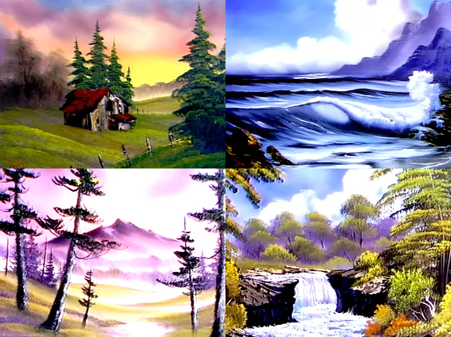
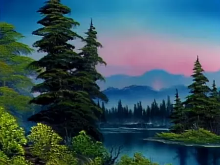

Bob Ross in Art History
The syllabus of Masterpieces of Western Art at Columbia ignores one of the most famous modern painters, Bob Ross. In this essay, I attempt to insert him into the canon.
Bob Ross
Bob Ross was born in 1942 in Daytona Beach, Florida. He started painting while stationed in Alaska with the US Air Force. He later learned his alla prima, colloquially known as wet-on-wet, oil painting technique from Bill Alexander, host of The Magic of Oil Painting. Bill’s aired on PBS from 1974 to 1982. Bob Ross took his place on PBS for his show The Joy of Painting from 1983 to 1995. In each episode, Bob invited viewers to paint along as he created a scenic landscape from start to finish in 30 minutes.
Artistic Style
While his paintings appear to have some impressionistic elements, he mainly painted indoors. He would let his imagination roam free and enjoy the painting process, saying “We don’t make mistakes, we just have happy accidents”, “We don’t know where [the trees] will go, where ever you want them, that’s exactly where they should live”, and “If painting does nothing else for you, it should make you happy”. He regularly used aerial perspective to create depth.
 Bob Ross, Cabin at Sunset (top left), Secluded Beach (top right), Misty Rolling Hills (bottom left), Misty Waterfall (bottom right), 1985-1986. Oil Painting, Private Collection.
His paintings consist mostly of landscape paintings, with the exception of several seascapes. He often painted mountains, lakes, and huts. He barely innovated his style and explained mechanically exactly what he was doing.
Island in the Wilderness
I will focus on his painting in episode 1 of season 29, titled Island in the Wilderness.

This painting is very layered, making it pleasing and easy to comprehend. In the very foreground are large trees, shrubs, and a path, almost inviting the viewer to enter the painting. There is an island with similar trees and shrubs, just smaller to create distance. Further back is a line of dark pine trees, right under the misty sunset. The blue and pink of the sunset are very beautiful and pleasing to the eye. While simplistic, it is undoubtedly beautiful and calming.
References
- Bob Ross | Biography, Art, Death, & Facts | Britannica. 7 Mar. 2024, https://www.britannica.com/biography/Bob-Ross.